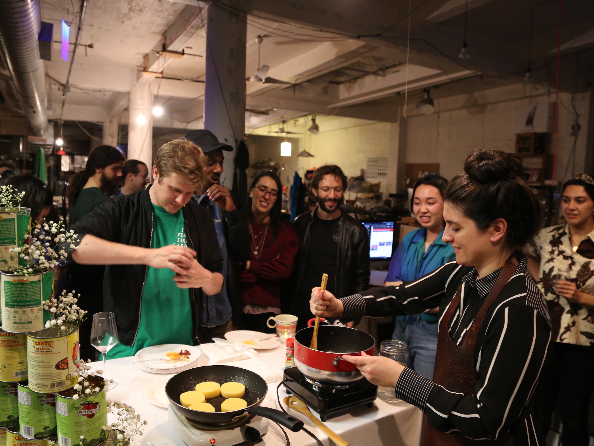

Tomato \ Xitomatl \ Tomate \ Pomodoro


Concept
The tomato (xitomatl in Nahuatl) like corn (mahiz in Taino) is native to what is now known as the Americas¹. It was introduced to Europe in the 16th century following the Spanish conquest as an ornamental plant prized by the aristocracy².
Over the course of the next century or so, it was cultivated as a food crop by the peasantry in what is now Italy³. Since then, it has become a global staple and, at least in the American imagination, a symbol of Italian cuisine.
The performance takes ownership of that history of dispossession and at the same time celebrates the centuries of culinary innovation in the home and hearth. The tomato becomes a nexus of personal histories of migration, feminized labor, and colonization.
The performer wears her identity as a protective garment in the form of the tomato apron, carefully picks it apart piece by piece as on offering of hospitality, and lovingly reconstitutes it into something completely new that is meant to be shared.
How it works
A garment made of tomato leather is reconstituted into sauce and served with polenta. It draws a direct line between colonization, immigration, and feminized labor, and invites participants to deconstruct and reform the seemingly fixed reality of the tomato through communion.
The tomato leather was made by dehydrating sheets of pureed tomatoes, garlic, and oregano in a home oven and then fashioning them into an apron shape. The leather was reconstituted in a pot over a hotplate using oil and water.
Context
Presented at the studios of the Metropolitan Exchange Building in Brooklyn, NY, May 9, 2019.
Credits
Created and performed by Mary Notari Photos by Ashley Jane Lewis Special thanks to Ayo Okunseinde
3. Ibid.